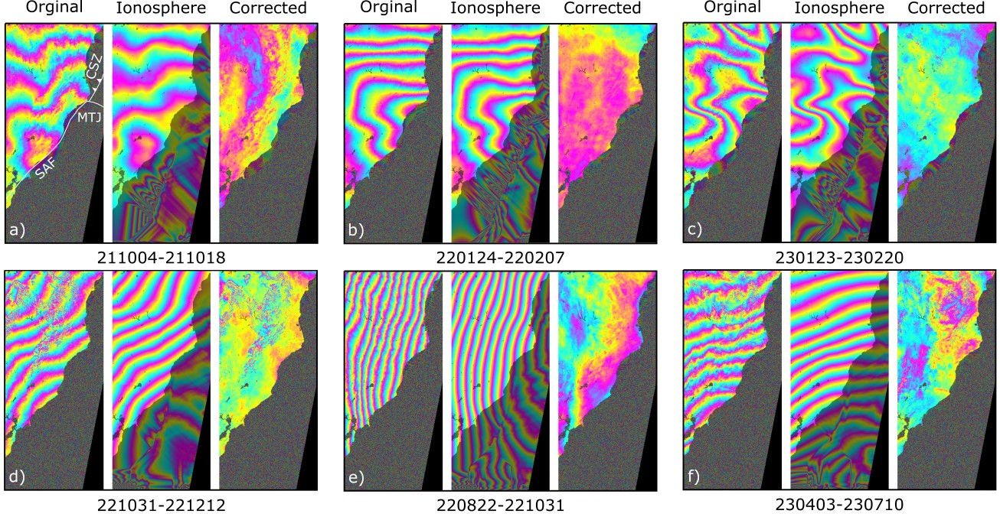

Ionospheric Effects in InSAR
Disclaimer
This page was assembled by Claude (Anthropic) drawing on Dani Lindsay's thesis work, research notes, and guidance. It has not yet been through a final review — if you see this notice, treat the content as a useful starting point but verify anything you plan to cite or act on. References and DOIs on this page have not been independently verified.
What is the ionosphere and why does it matter?
The ionosphere is the upper layer of Earth's atmosphere, roughly 70–1,000 km above the surface. Solar radiation ionises the gas there, creating a layer of free electrons. When a radar signal passes through this layer on the way down to the ground and back up again, those electrons slow and bend the signal in a way that introduces a measurable error.
This matters because InSAR works by comparing the phase of radar echoes collected on two different passes. The technique can resolve ground movements of just a few millimetres. Any change in the ionosphere between those two passes will appear as apparent ground movement that is not real.
The magnitude of the effect depends on the Total Electron Content (TEC) — essentially how many electrons the signal passed through. TEC varies with:
- Time of day (highest in the afternoon, lowest before dawn)
- Season (higher in summer)
- Latitude (strongest near the equator and at high latitudes)
- Solar activity (follows an ~11-year solar cycle — 2025/2026 is near solar maximum)
Why does radar frequency matter?
Ionospheric delay scales as the inverse square of radar frequency — lower frequency means much larger error.
| Band | Wavelength | Example missions | Ionosphere sensitivity |
|---|---|---|---|
| X-band | ~3 cm | TerraSAR-X, COSMO-SkyMed | Very low |
| C-band | ~6 cm | Sentinel-1, ERS, ENVISAT | Low to moderate |
| L-band | ~24 cm | ALOS-1/2, NISAR, ALOS-4 | High — ~16× more than C-band |
For Sentinel-1 C-band data, which you will use for most work at the start of your masters, the ionosphere is usually negligible for localised signals (landslides, volcanic centres). It can matter at the millimetre-per-year level for long-wavelength tectonic signals, particularly on ascending tracks.
For L-band data (ALOS-2, NISAR), the ionosphere is often the dominant noise source and must be accounted for in any rigorous scientific result.
What does ionospheric noise look like?
Ionospheric signals in interferograms typically appear as:
- Long-wavelength, range-parallel phase ramps across the scene
- Smooth gradients that do not correlate with topography (unlike tropospheric delay)
- Asymmetries between ascending and descending tracks (because ascending passes occur in the afternoon when the ionosphere is more active)
- At L-band: signals that can reach tens of centimetres to metres of apparent displacement across a wide-swath scene

Examples of ionospheric signals in ALOS-2 ScanSAR interferograms over Northern California (Lindsay, PhD thesis, UC Berkeley 2025). The long-wavelength streaks running roughly parallel to the range direction are characteristic of ionospheric noise at L-band. These signals are not ground deformation.
New Zealand context
New Zealand sits at mid-southern latitudes (~35–47°S), which is generally a favourable ionospheric environment — away from the equatorial ionisation anomaly and the polar electrojet.
- Descending tracks acquire in the morning (local time ~6 AM): low TEC, quieter ionosphere
- Ascending tracks acquire in the afternoon: higher TEC, more variable
- For Sentinel-1 C-band over NZ: ionospheric corrections are unlikely to be needed for localised signals at centimetre rates. For interseismic studies at millimetre-per-year rates, corrections are worth considering.
- Limitation: the South Pacific has sparse GNSS ground stations, which reduces the accuracy of model-based TEC corrections over NZ compared to continental regions.
Correction methods
Ramp removal
Fit and subtract a tilted plane from the interferogram. Works because the ionospheric signal is smooth and long-wavelength. The problem: it also removes any real long-wavelength deformation signal. Use only when you can verify the removed signal is not geophysical.
Global Ionosphere Maps (GIMs)
The International GNSS Service (IGS) has produced Global Ionosphere Maps (TEC grids derived from GNSS stations) since 1998. Tools like RAiDER and MintPy's iono_tec.py can apply these as corrections.
GIM corrections work adequately for C-band at mid-latitudes. They do not work for L-band — the spatial resolution (~300–400 km) is too coarse to capture the mesoscale ionospheric gradients that dominate at L-band sensitivity. Applying a GIM correction to L-band data has been shown to increase errors rather than reduce them (Wang et al., 2026).
Split-spectrum method
The most effective approach for L-band data. The ionospheric signal is dispersive (frequency-dependent) while ground deformation is not. By processing the radar data at two slightly different frequencies (sub-bands), the ionospheric contribution can be isolated and removed.
This requires full-bandwidth SLC data and is computationally expensive, but it captures the actual ionospheric structure at the full spatial resolution of the radar. The method was developed by Gomba et al. (2016), extended to InSAR time series by Fattahi et al. (2017), and applied to wide-swath ALOS-2 data by Liang et al. (2018).
Per-date inversion: rather than correcting each interferogram independently, the whole network can be inverted to estimate the ionospheric phase for each individual acquisition date. This reduces noise because multiple interferograms constrain each estimate.
NISAR-specific
NISAR transmits in a split-spectrum mode by design, and its GUNW products include a pre-computed ionospheric phase screen layer at 80 m resolution. For NISAR data, this is the primary correction approach.
Practical guidance for students
For most work with Sentinel-1 C-band over New Zealand:
- Start without ionospheric correction and assess your results
- Indicators that correction may be needed: long-wavelength ramp-like signals, asymmetry between ascending and descending results, phase streaks aligned with the range direction
- If correction is needed, the GIM-based approach via MintPy's
iono_tec.pyis the practical starting point
For L-band data (if you reach that stage):
- Split-spectrum correction is required for scientific-quality results
- Seek guidance before attempting this — it involves significant additional processing steps
Key references
Unverified — see disclaimer above
| Year | Authors | Paper | DOI |
|---|---|---|---|
| 1997 | Zebker et al. | Atmospheric effects in interferometric synthetic aperture radar surface deformation and topographic maps | — |
| 2016 | Gomba et al. | Toward operational compensation of ionospheric effects in SAR interferograms | DOI |
| 2017 | Fattahi et al. | InSAR time-series estimation of the ionospheric phase delay: An extension of the split range-spectrum technique | DOI |
| 2018 | Liang et al. | Ionospheric correction of InSAR time series analysis of C-band Sentinel-1 TOPS data | DOI |
| 2026 | Wang et al. | Evaluation of GIM-based TEC correction for C- and L-band InSAR time series | DOI |